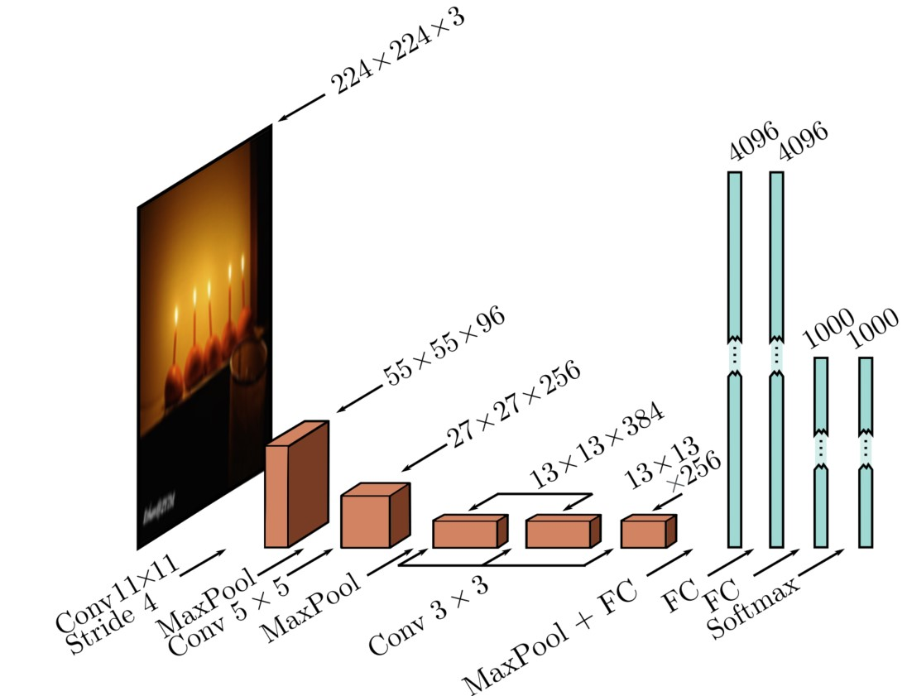
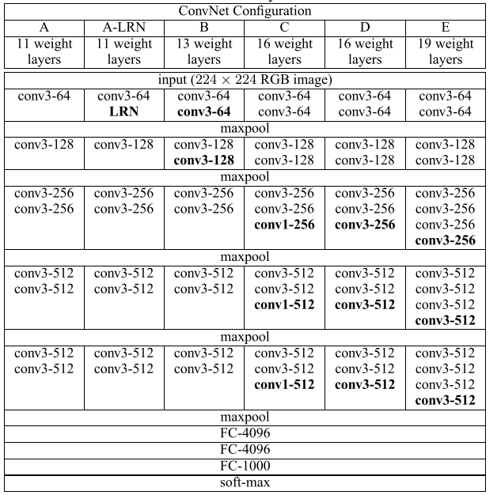
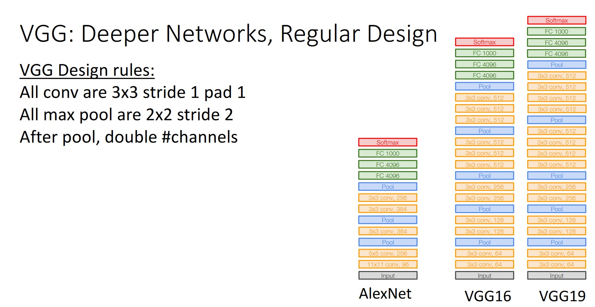
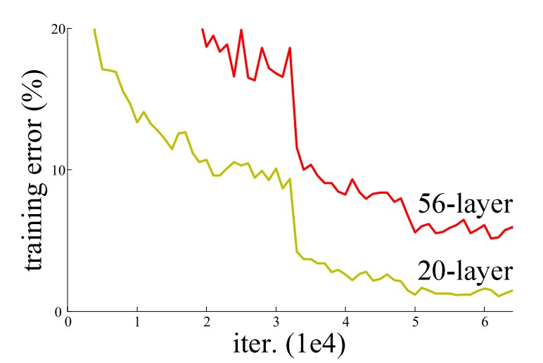

Image Classification
CAS Deep Learning - Computer Vision (Part1)
Institute for Data Science I4DS, FHNW
Overview
- Introduction
- Modeling
- Loss Function
- Architectures
Introduction
Adversarial Panda
Source: Goodfellow, Shlens, and Szegedy (2015)
Adversarial Panda
Source: Goodfellow, Shlens, and Szegedy (2015)
Image Classification

Image Classification: Example

Image Classification: Camera Traps

Modeling
Parametric Approach
With a parametric approach, we seek a model of the following form:
\[\begin{equation} \hat{y}^{(i)} = f(\theta, \mathbf{x}^{(i)}) \end{equation}\]
The model parameters \(\theta\) define our model and must be learned with an algorithm.
Softmax Classifier
We want to model the following probability:
\[\begin{equation} P(Y=\mathbf{y}^{(i)}| X = \mathbf{x}^{(i)}) \end{equation}\]
To obtain a valid probability distribution, the untransformed outputs \(\mathbf{z}\), also called logits, of a model are transformed with the Softmax function \(\sigma(\mathbf{z})\).
Softmax Transformation
\[\begin{equation} P(Y = k| X = \mathbf{x}^{(i)}) = \sigma(\mathbf{z})_k = \frac{e^{z_k}}{\sum_i^K e^{z_i}} \end{equation}\]
Logits to Probabilities
Probabilities

Image classifier with confidences.
Loss Function
Likelihood
The likelihood of a data point:
\[\begin{equation} P(Y=y^{(i)}| X = \mathbf{x}^{(i)}) = f(\theta, \mathbf{x}^{(i)}) \end{equation}\]
This is the modeled probability for the actually observed class \(y^{(i)}\).
Likelihood for Multi-Class Classification
The likelihood of a data point for multi-class classification:
\[\begin{equation} \prod_{j=1}^K P(Y = j| X = \mathbf{x}^{(i)})^{y^{(i)}_j} \end{equation}\]
Where \(y^{(i)} \in \mathbb{R}^{K}\) is a one-hot encoded vector, with the \(1\) at the true class.
Maximum Likelihood
The likelihood of an entire dataset:
\[\begin{equation} \prod_{i=1}^N \prod_{j=1}^K P(Y = j| X = \mathbf{x}^{(i)})^{y^{(i)}_j} \end{equation}\]
Under the maximum likelihood approach, we seek the parameters \(\theta\) that maximize the likelihood of observing the dataset.
Negative Log-Likelihood
Equivalently, we can minimize the negative log likelihood:
\[\begin{align} L(\mathbf{X}, \mathbf{y}, \theta) =& - \log \prod_{i=1}^N \prod_{j=1}^K P(Y = j| X = \mathbf{x}^{(i)})^{y^{(i)}_j} \\ L(\mathbf{X}, \mathbf{y}, \theta) =& -\sum_{i=1}^N \sum_{j=1}^K y^{(i)}_j \log P(Y = j| X = \mathbf{x}^{(i)}) \end{align}\]
Cross-Entropy
The loss function derived with maximum likelihood can also be viewed from the perspective of cross-entropy between two discrete probability distributions.
\[\begin{align} CE = - \sum_{x \in X} p(x) \log q(x) \\ CE = - \sum_{i=1}^N \sum_{j=1}^K y_j^{(i)} \log \hat{y}_j^{(i)} \end{align}\]
Cross-Entropy
True distribution (left) and predicted distribution (right).
Architectures
AlexNet

AlexNet Krizhevsky, Sutskever, and Hinton (2012)
AlexNet
AlexNet Prince (2023)
AlexNet: Table

Source: Johnson (2019)
VGG
VGG Simonyan and Zisserman (2015)
VGG

VGG Prince (2023)
VGG

ResNet

Source: He et al. (2016)
Test error for deeper model is larger. Overfitting?
ResNet
Source: He et al. (2016)
Training error for deeper model is also larger? What is going on?!
ResNet

ResNet

ResNet

ConvNext
Figures from Liu et al. (2022).
ImageNet Performance
Image from Prince (2023)
Choosing the Architecture
Don’t be a hero!
Typically, ResNet-50 or ResNet-101 are good choices. However, there are also models that require significantly fewer parameters, such as Efficient Nets.
Pre-Processing
- Resizing / Cropping to a fixed size
- Scaling: from the range [0, 255] to the range [0, 1]
- Normalization: Often normalized along the color channels
Transfer Learning
Transfer learning refers to the process of adapting a trained model that models Task A to Task B. Adapting pre-trained models often leads to better results and also reduces the number of training iterations.